ETL、ELT、ETLT到底有什么区别？一文讲透数据加工流程
来源：微信公众号 归档日期：2026-09-10 抓取状态：成功 原文字符：11544｜配图：31 张
摘要速览
- ETL/ELT/ETLT 的本质分歧不是字母顺序，而是"数据应该在哪里加工"：进仓前清洗 vs 先存原始再用数仓算力加工
- ELT 的崛起依托云数仓弹性算力：先 Load 原始数据保留全貌，转换按需进行， schema 变更成本更低
- ETLT 是混合形态：重清洗在源头做（ETL），重聚合留到仓内做（ELT），按字段敏感度与计算特征分配位置
核心内容
- 核心判断维度：计算发生的位置（源端 / 目标端）× 数据形态（清洗后 / 原始）
- ETL：传统方案，转换在中间引擎完成，进仓即"干净数据"；缺点是转换逻辑黑盒化、原始数据丢失、schema 变更需重跑管道
- ELT：借助 Snowflake/BigQuery 等弹性数仓，先完整落地原始数据，用 SQL/dbt 在仓内建模转换；优点是可审计、可重放、敏捷度高
- ETLT：现实工程中最常见——敏感数据脱敏、格式标准化在源头做，复杂聚合与业务口径在仓内做
- 延伸概念：Reverse ETL（仓内数据回流业务系统）、实时 ETL（流式加工），说明"加工位置"是一个可以自由组合的设计空间
- 选型建议：数据血缘与合规要求高 → 保留原始层（ELT 倾向）；源端算力/带宽受限或合规禁止原始落地 → 前置清洗（ETL 倾向）
可执行启发
- 评审数据管道方案时，先问"每一步转换发生在哪个位置、为什么"，而不是只看工具选型
- 自建知识库/数仓时保留原始数据层，转换全部可重放，避免"清洗后数据"成为唯一事实
归属：[[02-输入/按主题/工具与技术/_index|工具与技术]]
我的想法
（待补充）
原文沉淀
目录
- ELT、ETLT、Reverse ETL、实时ETL……
- 别先背ETL，先搞清楚E、T、L到底在干什么
- 第一步解决的是：
- ETL：先加工，再把“成品数据”送进数仓
- Extract → Transform → Load
- 第一，目标库只希望接收相对干净的数据。
- 第二，必须在进入目标系统之前处理敏感信息。
- 第三，目标端计算能力有限。
- ELT：先把原始数据存下来，再利用目标平台加工
- Extract → Load → Transform
- ETLT：先做必要处理，落库以后再完成业务转换
- 前置轻转换 + 原始数据落地 + 后置重转换
- ETL、ELT、ETLT，到底应该怎么选？
- “我们到底应该选择ETL还是ELT？”
- 1.这项转换能不能等到Load以后？
- 2.这项逻辑以后会不会经常变化？
- 3.原始数据有没有保留价值？
- 历史回溯、模型训练、指标重算、问题排查、算法分析，
- 4.计算应该放在哪里成本最低？
- 5.数据到底要求多快？
- 真正困难的不是ETL，而是让整条数据链路长期稳定
- 数据能不能跑通？
- 最后，用三个问题真正理解ETL、ELT和ETLT
- 第一，数据什么时候进入目标平台？
- 第二，原始数据是否需要保留？
- 第三，Transformation应该全部放在同一个地方吗？
做数据平台时，ETL几乎是绕不开的一个词。
但现在又经常看到：
ELT、ETLT、Reverse ETL、实时ETL……
很多人记住了几个缩写，却没有真正理解它们之间到底差在哪里。
其实ETL、ELT、ETLT讨论的根本不是三个字母怎么排列，而是一个非常核心的数据架构问题：
- 数据应该在哪里加工？
- 是在进入数据仓库之前就清洗好？
- 还是先把原始数据完整保存下来，再利用数仓算力处理？
- 或者一部分转换放在进入平台之前，另一部分留到进入平台以后？
这个问题看起来只是技术选择，实际上会直接影响：
数据时效、计算成本、原始数据保留、数据质量、指标迭代，以及整个平台后期的维护难度。
在正式展开之前，先分享一套《数据仓库建设解决方案》，里面涉及数据集成、数据仓库、数据治理、数据平台建设等内容。
如果正在搭建数据底座，或者正在梳理ETL任务，可以结合本文一起看。
需要自取：https://s.fanruan.com/ahhl0

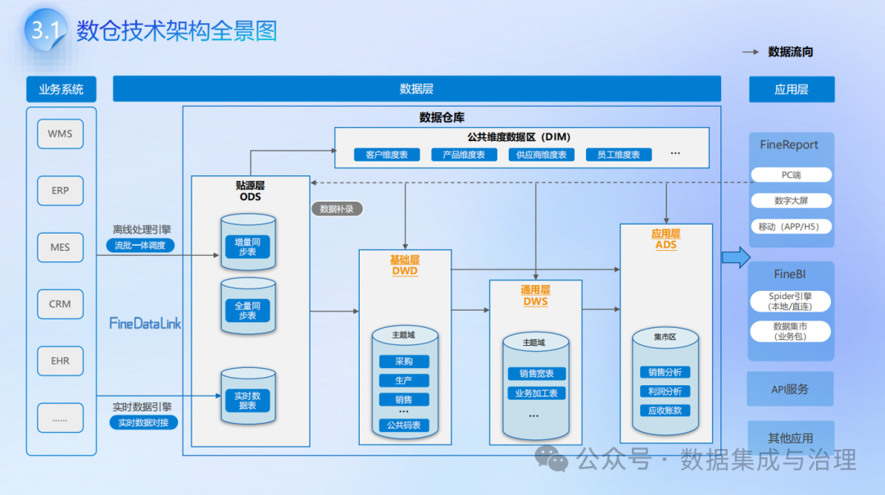

别先背ETL，先搞清楚E、T、L到底在干什么

ETL其实只包含三个动作。
E：Extract，抽取。
从业务系统中把数据拿出来。
企业里的数据来源可能非常复杂：
ERP里的订单、CRM里的客户、MES里的生产数据、数据库日志、Excel文件、API接口，甚至Kafka里的实时消息。
第一步解决的是：
数据从哪里来，以及怎样稳定地拿到。
T：Transform，转换。
把原始数据变成可使用的数据。
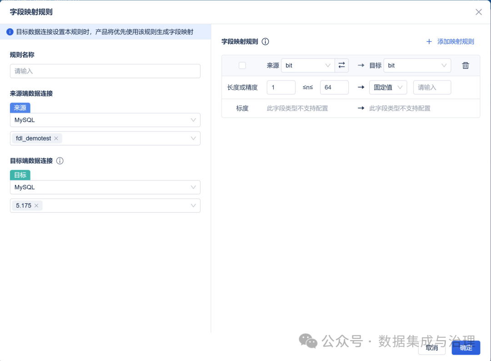
这一层包含的动作很多，例如：
- 字段类型转换；
- 空值和异常值处理；
- 数据去重；
- 编码统一；
- 多表关联；
- 主数据映射；
- 金额、数量等指标计算；
- 行列转换；
- 聚合汇总。
真正复杂的数据加工，大部分都发生在这里。
L：Load，装载。
把处理后的数据写入目标端。
目标端可能是ODS、数据仓库、数据湖、ClickHouse、StarRocks，也可能是某个业务数据库。
因此，ETL、ELT和ETLT其实都有E、T、L。
真正发生变化的，是T的位置。
实际做数据集成时，这一点非常重要。比如企业同时需要接Oracle、MySQL、文件和接口数据，并不一定要先决定“整个项目采用ETL还是ELT”。
在 FineDataLink 5.0 里，先把不同数据源接入同一条数据开发链路，再根据任务本身决定哪些转换在同步过程中完成、哪些逻辑留给目标数仓。** **
架构不是先选一个缩写，再强迫所有任务遵守，而是让不同类型的转换待在合适的位置。
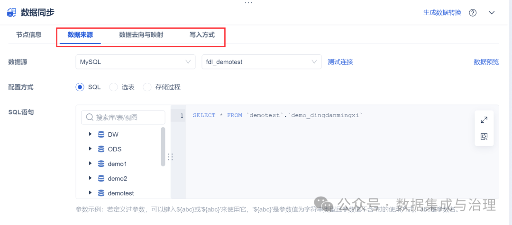

ETL：先加工，再把“成品数据”送进数仓

传统ETL的顺序是：
Extract → Transform → Load
也就是：
抽取 → 转换 → 装载。
假设企业需要把ERP中的销售订单同步到数据仓库。
原始数据中可能存在：
客户编码不统一、日期格式不同、金额字段为空、测试订单没有剔除、商品编码和主数据不一致等问题。
ETL会先处理这些问题：
抽取数据 → 清洗 → 标准化 → 关联 → 计算 → 写入目标表。
进入数据仓库的数据，已经是一轮加工后的结果。
这也是传统ETL最明显的特点：
数据先变成“合格产品”，再进入目标系统。
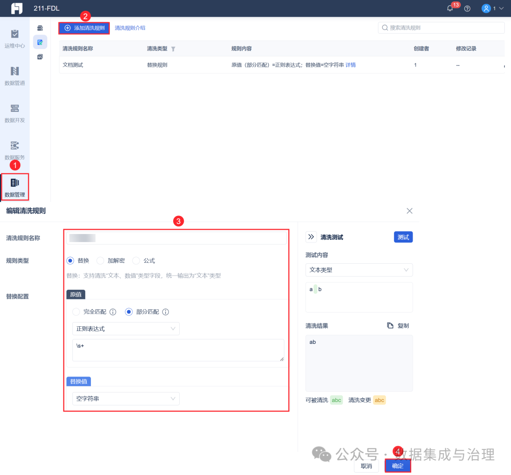
这种方式特别适合几类场景。
第一，目标库只希望接收相对干净的数据。
比如核心财务库、监管库或者经营主题库，不希望大量脏数据直接进入正式数据层。
第二，必须在进入目标系统之前处理敏感信息。
例如手机号、身份证号、银行卡号等字段，在跨环境流转前就需要进行脱敏或裁剪。
第三，目标端计算能力有限。
传统数据库如果既负责查询，又承担大量关联、清洗和聚合，很容易影响业务性能。
所以早期数仓体系中，常常把计算放到独立ETL引擎。
但ETL的问题也很明显：
T挡在了L前面。
只要Transformation越来越重，Load就必须等待。
假设每天只有100万条数据，这个问题并不明显。
可如果每天新增几十亿条日志，同时还要求10分钟甚至1分钟更新一次，所有数据都必须先经过复杂计算再入仓，整条链路延迟就会不断增加。
这也是ELT逐渐兴起的重要原因。
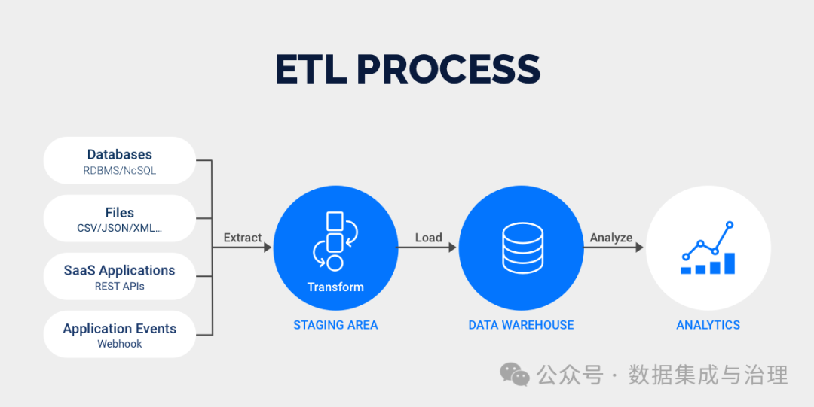

ELT：先把原始数据存下来，再利用目标平台加工
ELT的顺序变成：
Extract → Load → Transform
也就是：
先拿数据，再存数据，最后处理数据。
这个变化看起来只是T和L换了位置，背后的数据架构思想却发生了很大变化。
ELT首先强调：
原始数据本身也是一种资产。
例如今天业务规定：
“过去12个月购买过商品的客户，属于活跃客户。”
半年后规则改成：
“过去6个月发生交易，并且累计消费超过1万元。”
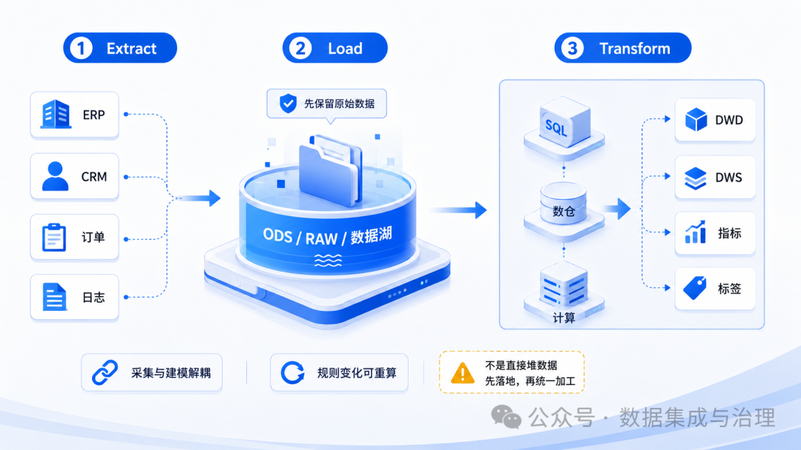
如果过去ETL只保留了最终的“活跃/非活跃”标签，而没有保存交易明细，那么新规则出现以后，历史数据就很难重新计算。
但如果采用ELT，把原始订单先完整落到ODS、Raw Layer或者数据湖中，后面业务规则变化以后，就可以重新加工。
因此ELT特别适合：
数据量大、计算能力强、业务逻辑变化频繁、需要保留原始数据的场景。
云数仓、MPP数据库、Spark、湖仓一体架构越来越普及以后，目标平台本身已经具备很强的计算能力。
这时候再把大量计算全部塞到数据同步工具里，反而可能没有必要。
比如在实际的数据建设中，一条订单流水可以先借助 FineDataLink 5.0 持续同步到ODS，先把源端变化可靠地留下来；
到了DWD、DWS层，再利用SQL或者数仓计算资源统一完成客户维度关联、指标加工和公共口径沉淀。
这样一来，数据采集与业务建模就不会被绑在同一个任务里，后续某个指标发生变化，也不需要重新从源系统抽一遍数据。
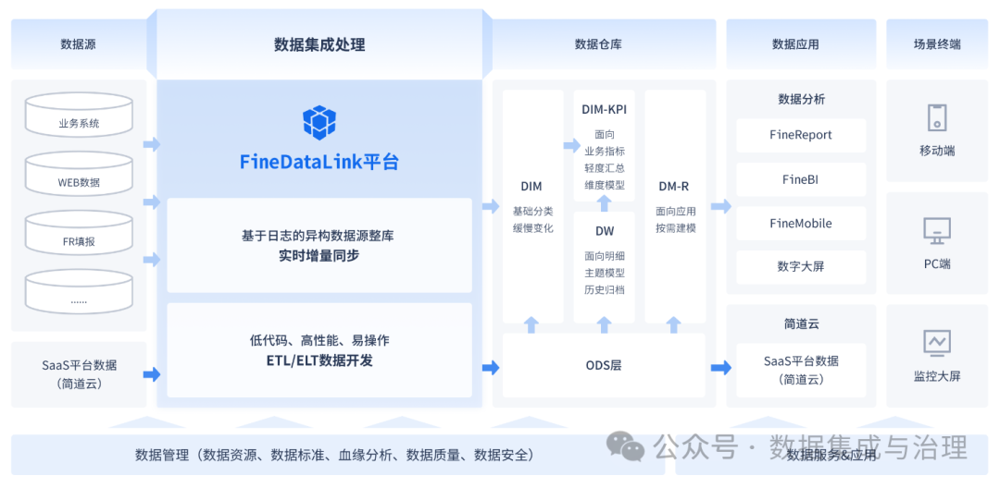
但ELT也有一个很大的误区：
很多人把“先Load”理解成“什么都不处理，先扔进去再说”。
真正成熟的ELT并不是无条件保留所有垃圾数据。
例如：
结构完全错误的数据、必须脱敏的字段、无法解析的消息、明显不合法的记录，
依然可能需要在进入平台之前处理。
于是现实项目中，又逐渐形成了ETLT这种混合模式。

ETLT：先做必要处理，落库以后再完成业务转换

ETLT可以理解为：
Extract → Transform → Load → Transform
更准确一点，可以写成：
客户收入贡献 = 某客户收入 ÷ 总收入 × 100%
为什么前一个T可以写成小写？
因为前后两个Transform承担的职责通常并不一样。
前面的转换更偏向：
技术型转换。
例如：
字段类型修正、JSON解析、明显异常数据过滤、敏感字段脱敏、基础编码转换、CDC事件整理。
这些工作解决的是：
这批数据能不能安全、规范地进入数据平台。
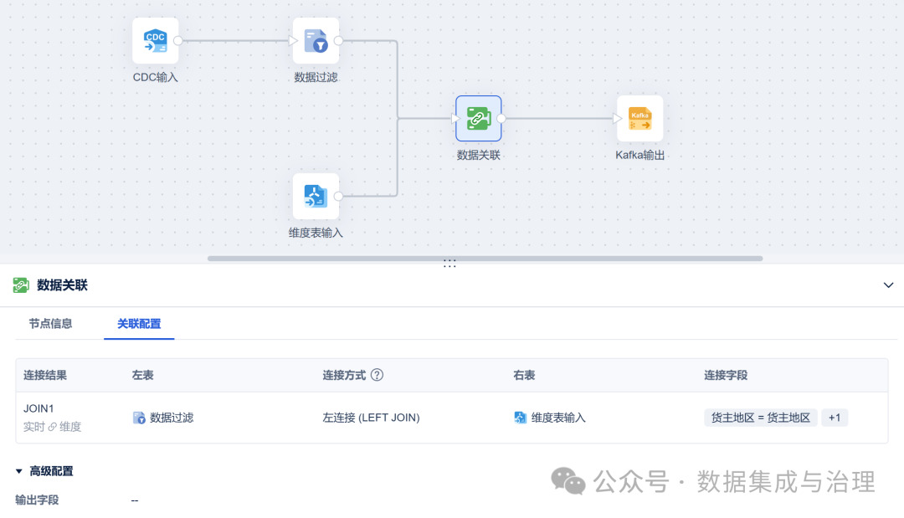
而后面的Transform更偏向：
业务型转换。
例如：
客户分层、收入计算、利润口径、主题宽表、公共指标、区域销售汇总、经营分析模型。
它解决的是：
进入平台的数据怎样变成真正可分析的数据。
举一个实时订单场景。
源数据库发生变化后，通过CDC捕获订单新增、修改和删除。
进入数据平台以前，可以先完成：
事件解析 → 字段转换 → 必要过滤 → 基础标准化。
随后把订单明细写入ODS。
再由后续任务完成：
ODS → DWD → DWS → ADS。
这其实就是一种典型的ETLT思路。
如果链路里既有实时同步又有离线数仓加工，FineDataLink 5.0 的角色也可以按这个边界来拆：
实时数据管道负责把源端变化持续送到目标端，并处理进入平台之前必须解决的问题；后续数据开发任务再承担跨表关联、主题加工和汇总计算。
这样处理以后，实时链路不会因为塞入过多业务规则而越来越重，复杂业务口径也能够集中留在数仓层维护。
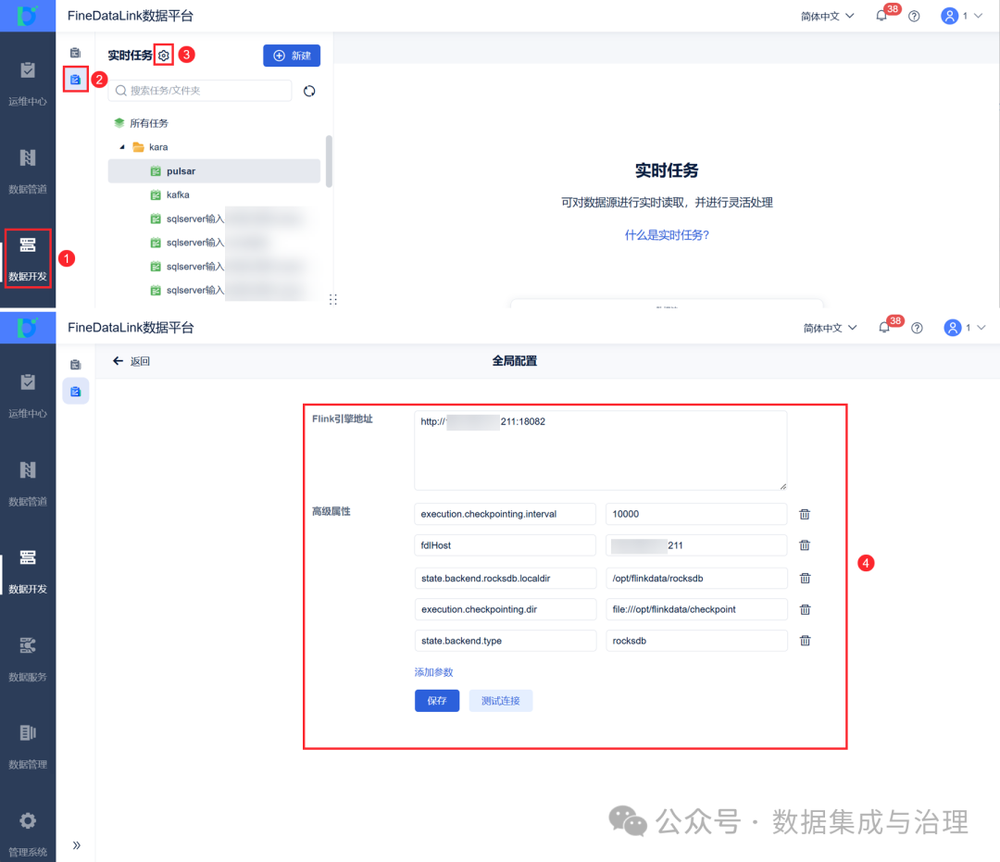
需要注意的是：
ETLT不像ETL、ELT那样是一个严格统一的标准术语。
实际项目里，人们更多是用它描述一种：
前置轻转换 + 原始数据落地 + 后置重转换
的混合数据加工模式。
而这种模式，其实越来越符合现代企业的数据架构现实。

ETL、ELT、ETLT，到底应该怎么选？

真正做项目时，不建议问：
“我们到底应该选择ETL还是ELT？”
因为一个企业完全可能同时存在三种模式。
真正应该判断的是：
1.这项转换能不能等到Load以后？
如果不能，就必须前置。
例如：
敏感字段必须脱敏以后才能离开生产环境，那么这个T不能等。
2.这项逻辑以后会不会经常变化？
如果会，尽量后置。
比如：
客户等级、利润口径、渠道分类、有效订单规则。
因为业务逻辑越容易变化，越不应该过早“写死”在采集链路里。
3.原始数据有没有保留价值？
如果未来需要：
历史回溯、模型训练、指标重算、问题排查、算法分析，
那就应该尽可能保留原始数据。
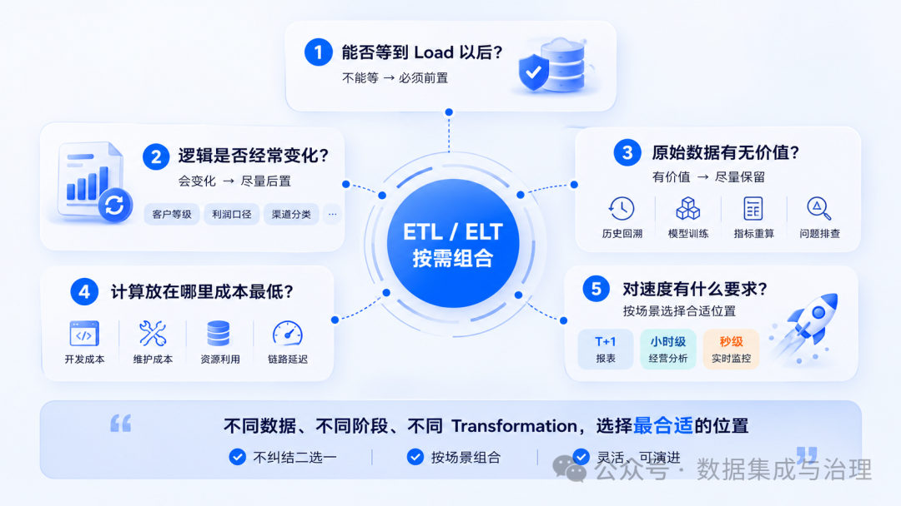
4.计算应该放在哪里成本最低？
这里说的成本不只是服务器成本。
还包括：
开发成本、维护成本、任务耦合、计算资源和链路延迟。
如果目标数仓本身计算能力很强，那么大型Join和聚合未必需要放在ETL引擎。
5.数据到底要求多快？
T+1报表、小时级经营分析和秒级设备监控，根本不是一个问题。
对实时链路来说，通常应该尽量保证：
采集路径短、转换动作少、同步过程稳定。
复杂计算可以适当后移。
所以真正成熟的数据架构不是：
ETL和ELT二选一。
而是：
不同数据、不同阶段、不同Transformation，分别选择合适的位置。
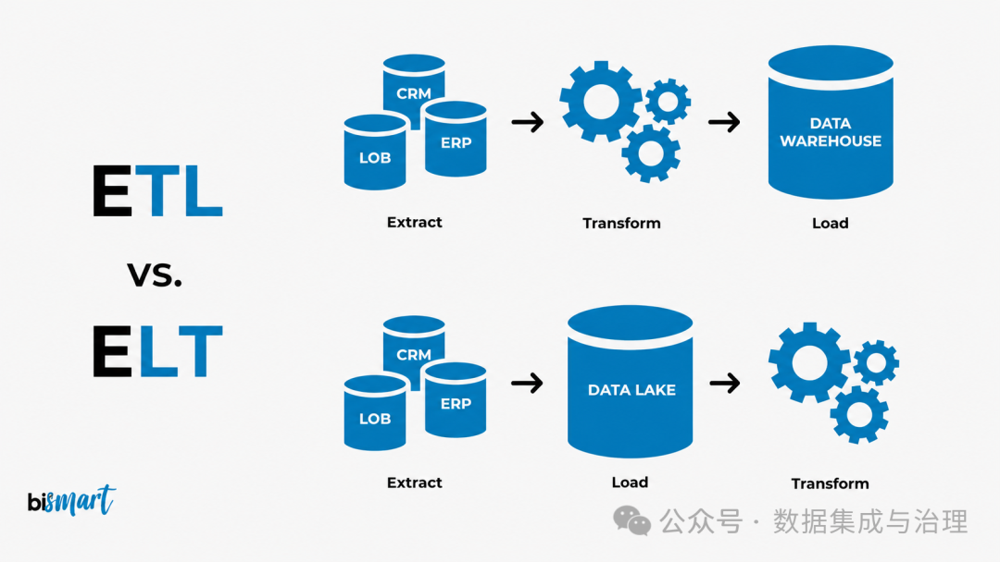

真正困难的不是ETL，而是让整条数据链路长期稳定

很多企业第一次建设数据平台时，最关注的是：
数据能不能跑通？
但真正进入生产以后，问题会迅速变成：
- 它能不能一直跑？
- 例如凌晨2点某个任务失败。
- 后面的十几个任务怎么办？
- 源库新增一个字段，下游是否同步变化？
- 5000万条数据同步到一半断了，是重新开始，还是从断点继续？
- 某条异常记录失败，是整批任务停掉，还是进入脏数据队列？
- 如果上游数据晚到半小时，下游指标什么时候更新？
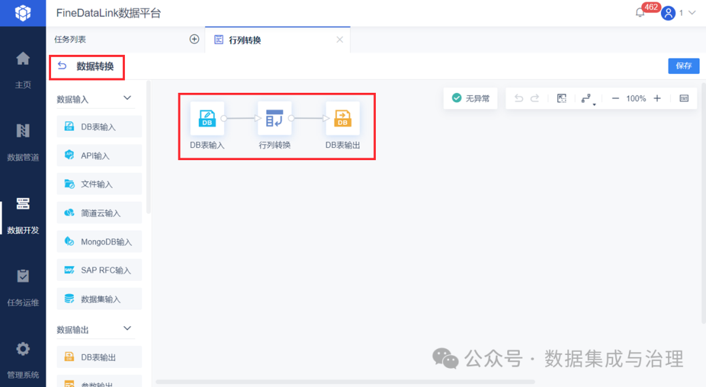
真正的数据加工链路，实际上应该是：
数据源 → 抽取 → 转换 → 装载 → 调度 → 依赖 → 监控 → 告警 → 重试 → 补数 → 校验。
只讨论ETL、ELT，其实只讨论了中间很小的一部分。
当任务规模从十几条增长到几百、几千条以后，开发人员真正花时间的，往往已经不是再写一个字段转换，而是排查：
哪条链路失败了、为什么失败、影响到哪里、能不能恢复。
这也是数据集成平台进入生产以后价值最明显的地方。
比如用 FineDataLink 5.0 管理大量数据任务时，除了数据同步和转换本身，还需要把任务调度、上下游依赖、运行记录、异常处理和失败重跑一起纳入管理。
否则即便每一条ETL逻辑都写得没问题，几百条任务叠在一起以后，最终依然可能变成一套很难维护的“数据脚本森林”。
所以企业真正需要建设的，从来不只是：
ETL流程。
而是：
Data Pipeline——可长期运行的数据生产链路。
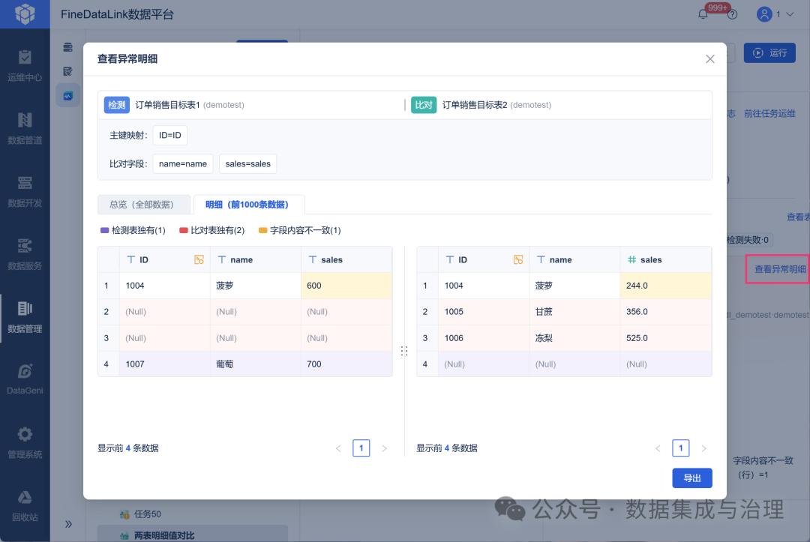

最后，用三个问题真正理解ETL、ELT和ETLT

如果以后再遇到ETL、ELT、ETLT，不需要死记三个缩写。
只需要问三个问题。
第一，数据什么时候进入目标平台？
先加工完再进，是ETL。
先进入平台再加工，是ELT。
第二，原始数据是否需要保留？
越强调原始数据沉淀、历史重算和灵活建模，架构通常越偏向ELT。
第三，Transformation应该全部放在同一个地方吗？
多数现代数据平台的答案其实是：
不应该。
安全、格式、协议、基础质量问题，可以前置。
指标、主题、模型和业务口径，可以后置。
所以ETLT真正值得理解的地方，并不是多出来一个字母T，而是它告诉我们：
数据转换本身也应该分层。
- ETL代表的是：先做饭，再端上桌。
- ELT代表的是：先把食材放进厨房，需要什么再做什么。
- ETLT则是：食材先完成必要的清洗和预处理，再进入厨房完成正式加工。
三种模式没有绝对的先进与落后。
真正优秀的数据架构，也不是坚定地站在ETL或者ELT某一边。
而是能够判断：
什么数据应该尽快落地，什么规则应该提前执行，什么逻辑应该留到数仓，什么原始信息必须保留下来。
理解了这一点，你真正理解的就不只是ETL。
而是整个数据加工体系背后最关键的架构原则：
把每一次Transform，放在最合适的位置。
**点击【阅读原文】，体验文中同款资料包 **
归属：[[02-输入/按主题/工具与技术/_index|工具与技术]]